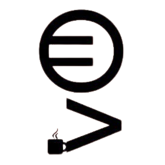
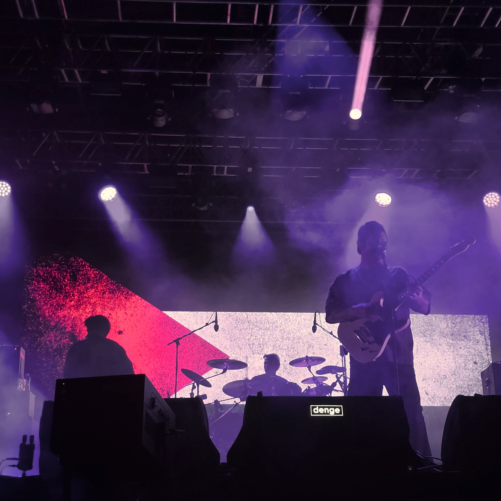
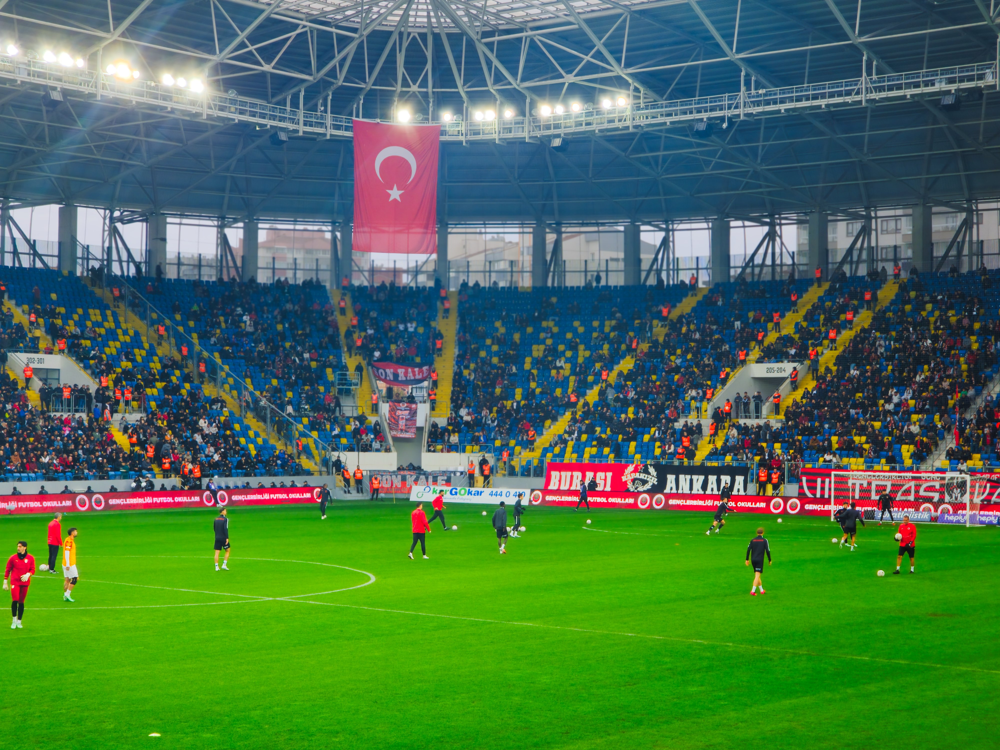
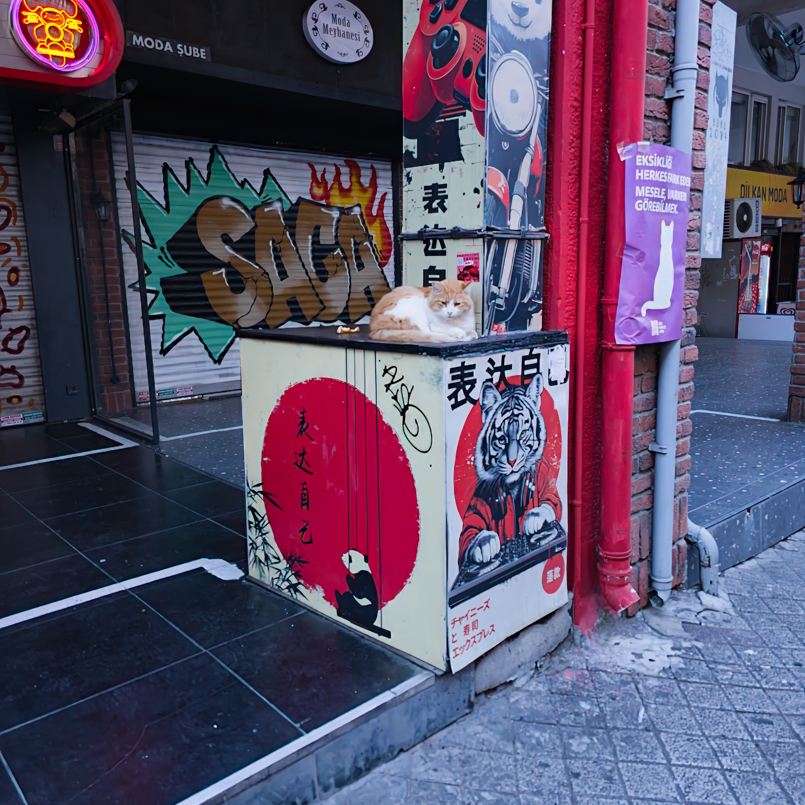
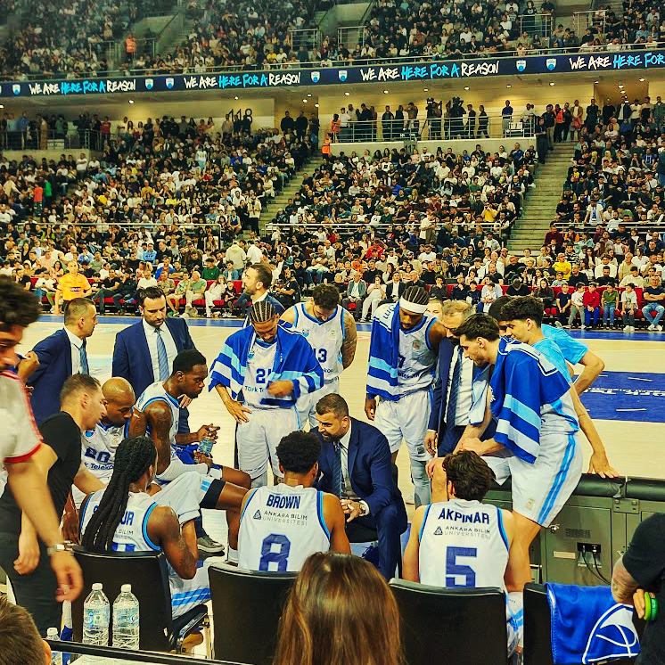

Hangi yazıların okunduğunu görmek için çerez kullanmayan, gizlilik odaklı Rybbit ile anonim ziyaret istatistikleri toplamak istiyorum. Bu yalnızca onay verirseniz çalışır. Ayrıntılar: Gizlilik ve Çerez Politikası.